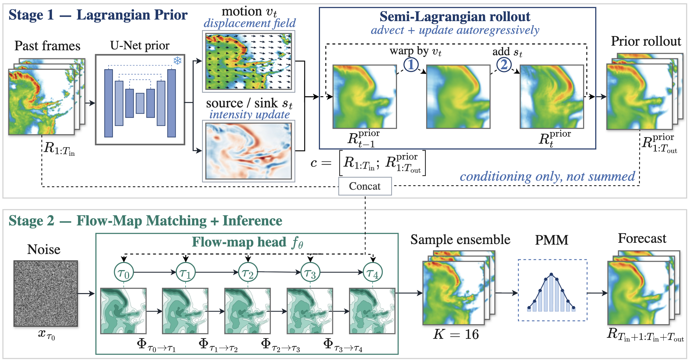
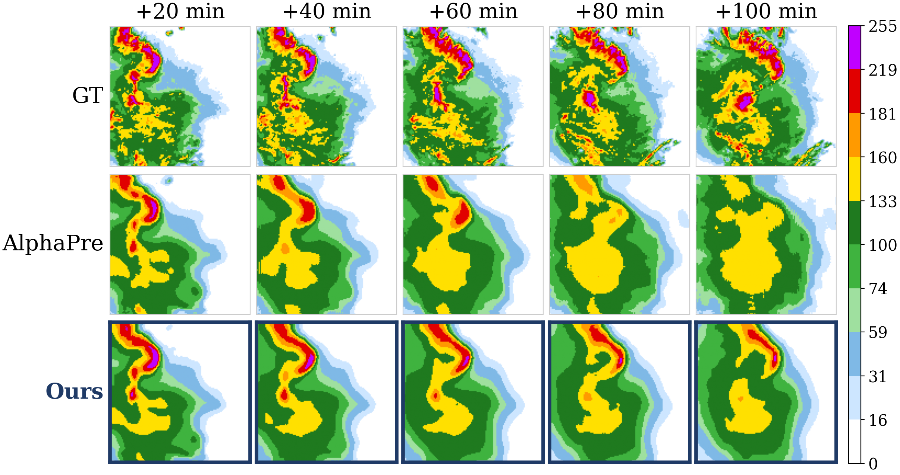
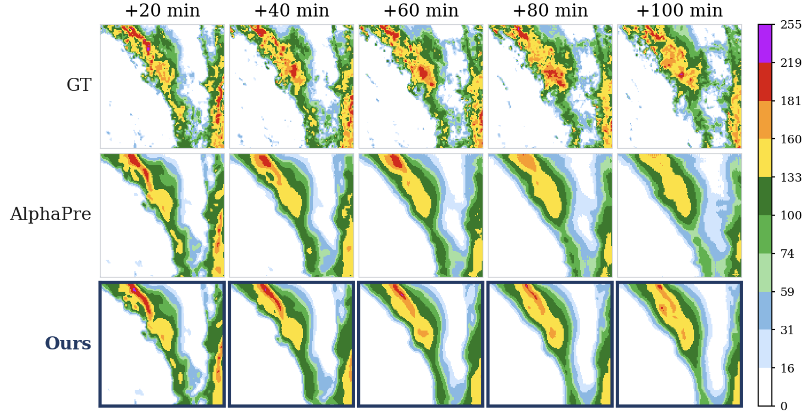

1Neurogica Inc. · 2LTS, Inc. · 3ME-Lab Japan, Inc. · 4Hokkaido University
Two things: where the storm goes, and what its fine structure looks like. Optimizing them together produces conditional-mean blur; optimizing structure alone drifts off the physical track.
PG-FMM separates the two. A frozen Lagrangian advection prior supplies an interpretable, motion-consistent forecast, and a few-step flow-map generator renders the unpredictable detail on top. The head conditions on the prior rather than summing it, so neither module contaminates the other.
Across SEVIR, MeteoNet, Shanghai and CIKM, PG-FMM improves over the strongest published baseline on 18 of 24 metrics, with the largest gains at the heavy-rain thresholds where mean-seeking models fail.
A frozen Lagrangian advection prior (Stage 1) conditions a Flow-Map Matching head (Stage 2). Inference draws a \(K=16\) ensemble at \(\mathrm{NFE}=4\) and combines it with the probability-matched mean.

The predictable part of the field is transport. The prior enforces the advection equation
\[ \partial_t R + (v \cdot \nabla)\, R = s, \]
where a U-Net predicts the motion field \(v_t\) and source/sink \(s_t\), and a semi-Lagrangian scheme rolls the field forward, \( R_{t+1} = \operatorname{warp}(R_t, v_t) + s_t \). Only the coefficient fields are learned; the rollout operator itself has no parameters.
Instead of integrating an instantaneous velocity step by step, the head learns the two-time solution operator \( \Phi_\theta \) along the interpolant \( x_s = (1-s)\,x_0 + s\,x_1 \):
\[ \mathcal{L}_{\mathrm{FMM}} = \mathbb{E}_{\,0 \le r < t \le 1}\, \bigl\lVert\, \Phi_\theta\!\left(x_t,\, t \!\to\! r \mid c\right) - x_r \,\bigr\rVert_2^2, \]
\[ c = \bigl[\, R_{1:T_{\mathrm{in}}} \,;\; R^{\mathrm{prior}} \,\bigr]. \]
One network then serves any step budget, since valid maps compose: \( \Phi_{t \to r} = \Phi_{m \to r} \circ \Phi_{t \to m} \).
AlphaPre evaluation protocol (shared evaluator, thresholds and test splits); ours uses a 16-member probability-matched-mean ensemble at NFE = 4. Bold = best, underline = second best. ND / D = without / with an explicit dynamics module.
Baseline numbers are transcribed from the AlphaPre benchmark [10] and evaluated under its protocol; heavy-rain thresholds are the two highest of each dataset.
Across lead time, PG-FMM preserves the heavy-rain cores that the deterministic baseline attenuates into smooth blobs, including on real high-impact events.


@inproceedings{nagashima2026pgfmm,
title = {Physics-Guided Flow-Map Matching for Precipitation Nowcasting},
author = {Shunya Nagashima and Takumi Bannai and Makoto Misaizu and Keisuke Maeda and Takahiro Ogawa and Miki Haseyama},
booktitle = {Proceedings of the Asian Conference on Computer Vision (ACCV)},
year = {2026}
}